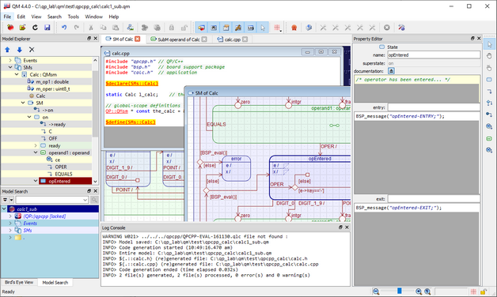
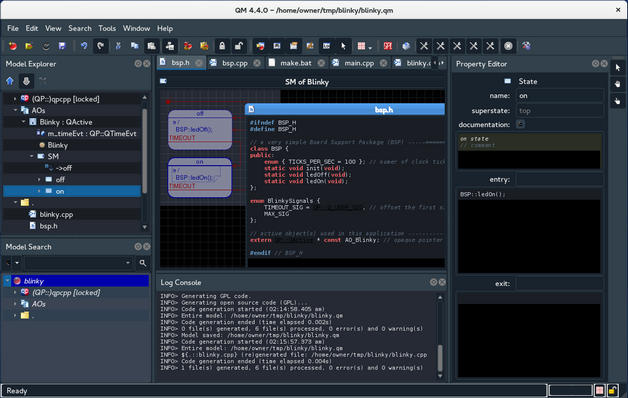

Manage Tools Dialog BoxBasic Modeling
QM can be customized in several ways:
- You can change the entire look and feel of the application by selecting a new QM GUI Style.
- You can fine-tune fonts and colors of individual elements by means of the QM Style Sheets.
- You can separately customize colors and fonts used in the dark and light schemes in the QM style sheets.
- Finally, you can create your own custom Model Templates to speed up creating new models.
QM GUI Style
You can also customize QM by changing the overall style of the GUI by means of the sub-menu. The available styles are shown below.
- Attention
- The selected GUI style is loaded only during the startup, so you need to restart QM for the GUI style to take effect.
QM GUI StylesThe View|Style-menu allows you to achieve different effects, such as the "Default" (light) style and the "Dark" style shown below:

Default Style with qm_light.qss StyleSheet (Windows)

Dark Style with qm_dark.qss StyleSheet (Linux)
QM Style Sheets
The QM Style Sheets, located in the Resources sub-directory of the QM Installation Folder, provide the main way of customizing QM. The QM Style Sheets take advantage of the mechanism of Qt Style Sheets↑ inspired by HTML CSS (Cascading Style Sheets).
QM uses two Style Sheets:
qm_light.qss - applied when the system is configured with the light color scheme for applications (see Light Color Scheme)qm_dark.qss - applied when the system is configured with the dark color scheme for applications (see Dark Color Scheme)
QM style sheet files on disk- Note
- If QM is installed on Windows in such locations as "Program Files" or "Program Files (x86)", the
qm.qss style sheet might not be editable or accessible to QM (because Windows treats these folders specially). In this case it is recommended to re-install QM in a different folder, for example: C:\qp\qm.
- Attention
- The QM Style Sheet is loaded only during the startup, so you need to restart QM for the style sheet to take effect.
The QM Style Sheets qm_xxx.qss are plain text files that you can edit with any text editor. QM Style Sheets contain several commented sections described below:
MainWindow Section
/* MainWindow ................................................................
*/
MainWindow {
/* window background for code, doc and diagram widnows
* (outside the editing area or canvas area)
*/
qproperty-windowColor: darkGray;
/* background for code edit area */
qproperty-codeBaseColor: white;
/* background for doc edit area */
qproperty-docBaseColor: #ffffdd; /* light yellow */
/* syntax highlighting styles */
qproperty-comment: "green, #F7F7F7, italic";
qproperty-keyword: "blue, transparent, bold";
qproperty-preproc: "red, transparent, bold";
qproperty-string: "darkBlue, transparent, italic";
qproperty-string2: "blue, transparent, italic";
qproperty-trail: "transparent, lightGray";
qproperty-stdint: "blue, #EEEEEE";
qproperty-me_ptr: "red, yellow";
qproperty-evt_ptr: "blue, yellow";
qproperty-qp_api: "red, transparent, underline";
qproperty-qm_dir: "red, yellow, bold, underline";
}
ExplorerView Section
The ExplorerView section of the qm_xxx.qss Style Sheet pertains to Model Explorer.
/* ExplorerView ..............................................................
*/
ExplorerView {
color: black;
background-color: white;
alternate-background-color: #e6e6e6;
}
ExplorerView::item:hover {
background-color: #ffcccc;
}
ExplorerView::item:selected {
background-color: #cc0000;
}
SearchView Section
The SearchView section pertains to all Model Search.
/* SearchView ................................................................
*/
SearchView {
font-style: italic;
color: #000066;
background-color: #e6e6ff;
alternate-background-color: #ccccff;
}
SearchView:item:hover {
background-color: #9999ff;
}
SearchView::item:selected {
background-color: #000066;
}

SearchView Styles
DiagramView Section
The DiagramView section pertains to all Diagrams and the Bird's Eye View.
DiagramView {
font-family: "Arial";
font-size: 12px;
qproperty-canvasColor: white;
qproperty-nodeColor: #2222ff;
qproperty-nodeColor1: #00ff00;
qproperty-nodeColor2: #ff0000;
qproperty-nodeColor3: #808080;
qproperty-connColor: #e60000;
qproperty-connColor1: #008000;
qproperty-connColor2: #0000cc;
qproperty-connColor3: #000000;
}
CodeEdit Section
The CodeEdit section pertains to all code editors in the QM user interface, which include files and action editors in the Property Editor. The styles for the Working with Code Editors section come in two variants: when the Code window is active and when it is inactive.
CodeEdit {
font-family: "Consolas";
font-size: 8.75pt;
color: black;
selection-color: white;
selection-background-color: darkBlue;
}
Code Edit Styles (Code Edit Active)
Code Edit Styles (Code Edit Inactive)
DocEdit Section
The DocEdit section pertains to all documentation editors in Property Editor.
DocEdit {
font-family: "Consolas";
font-size: 9pt;
font-style: italic;
color: darkBlue;
}
Log Section
The Log section pertains to the Log Console. The styles for the log come in two variants: when the log window is active and when it is inactive.
/* Log window ................................................................
*/
Log {
font-family: "Consolas";
font-size: 8.75pt;
color: black;
background-color: white;
selection-color: darkRed;
selection-background-color: yellow;
}
Log:!active {
selection-color: white;
selection-background-color: darkGrey;
}
Log Styles (Log Window Active)
Log Styles (Log Window Inactive)
Birds-Eye Styles
/* Birdseye view window ......................................................
*/
Birdseye {
background: darkGray;
background-color: lightCyan;
}
Model Templates
QM model templates are simply QM models, perhaps incomplete, which are intended to be elaborated further into complete QM models. Simple model templates are provided in the QM Installation Folder in the subdirectory Resources/, but you can easily add your own model templates.
Using the Templates
Model templates are used through the New Model Dialog Box, where you can select a model template on which to base your newly created model.
Adding New Templates
You add a new model template simply by saving a model in the QM Installation Folder (<qm>) in the subdirectory Resources/<qp-framework-type>, where <qp-framework-type> stands for the framework type of the saved model. For example:
- A model template created with the QP/C framework↑ should go into the directory
<qm>/Resources/qpc.
- A model template created with the QP/C++ framework↑ should go into the directory
<qm>/Resources/qpcpp.
- Note
- If you save a model template for the wrong QP Framework type (e.g., you save a model based on
qpc into Resources/qpcpp/), the template will be rejected during creation of the new model.
Manage Tools Dialog BoxBasic Modeling